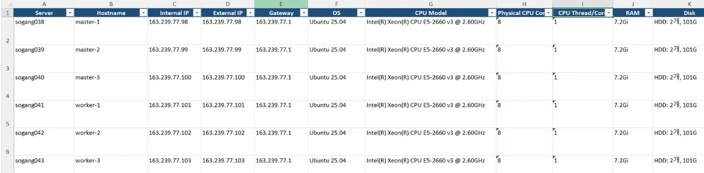

PREVIEW
서버 구성 관리 자동화 시스템 구축
수작업으로 진행되던 서버 구성 관리를 자동화 및 정형화를 통해
정보 불일치를 해결하였습니다.
약 1년간 방치된 서버 1대와 정보 불일치 4건을 발견하고 보고하였습니다.

사내 정보 보호를 위해 개인 서버 예시로 대체하였습니다.
상황 및 운영 결과
70여 대 사양 수집 시간
약 4시간 수작업
→약 10분 자동 스크립트 실행
관리 대장 불일치 발견
OS 정보·비밀번호·SSH 포트 정보 불일치 4건을 확인
방치된 GPU 서버 발견
RTX 4090 2대가 장착된 GPU 서버를 확인
관리 문서 갱신
단일 실행으로 최신 서버 구성 정보를 다시 수집해 관리 문서를 갱신